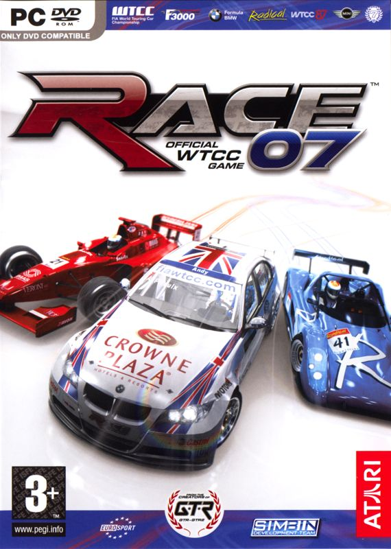
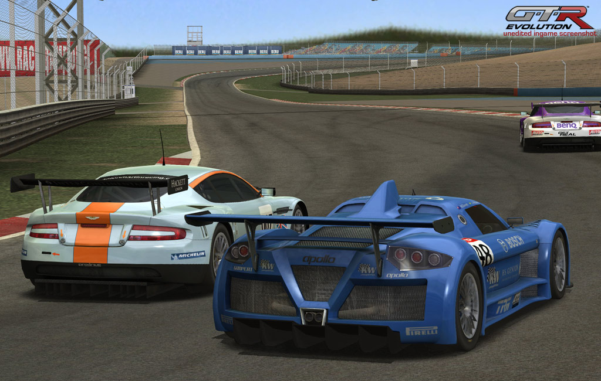
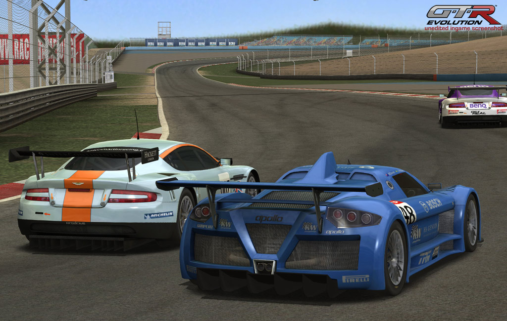

Play date: 2007
Publisher: SimBin
Developer: SimBin
Memo: No steam, need wheel
Description: Race 07 builds on the features of the previous Race PC game. In addition to the regular World Touring Car Championship (a mostly European series featuring makes like Alfa Romeo, BMW, Chevrolet, Honda, Peugeot, and Seat), several other exotic, overlooked series can be experienced as well. The Caterham series features light, open-air, vintage style cars from England. The Radical RS3 and RS4 series are like Caterham, but with more modern cars. The MINI series features, naturally, MINI Coopers for the racetrack.
 
